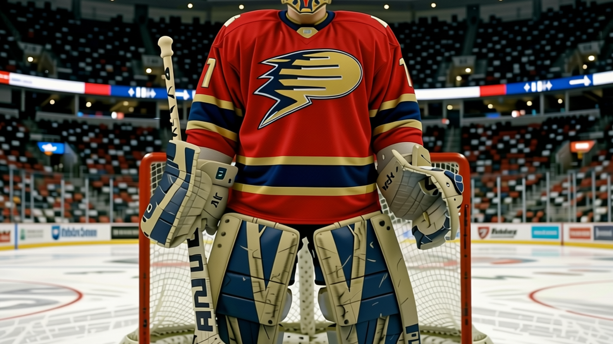
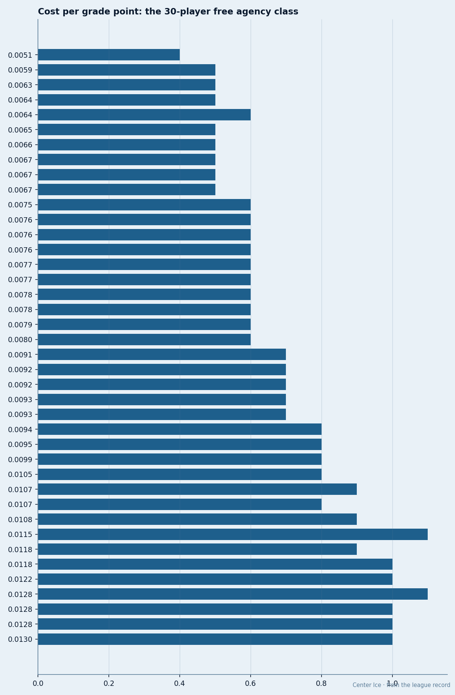

Does Morale Win Games, or Do Games Win Morale? The Correlation Says Neither
The Bureau's Morale Scale and the standings share a correlation of 0.361. Florida has the happiest room in hockey and is 7 points below league average.
 Doug ReimerAnalytics editor, ex-video coach · The Slot Report
Doug ReimerAnalytics editor, ex-video coach · The Slot Report
The correlation between a club's average morale on the Bureau's Morale Scale and its point total is 0.361. Florida sits at 98.2 morale, the highest in the league, with 39 points. Tampa Bay sits at 97.5 with 59.
I ran the regression on all 30 club averages against their current point totals. The coefficient is 0.361, which accounts for 13.0% of the variance in the standings. The other 87% is unaccounted for. The two clubs with the most positive morale gap relative to league average (Florida at 98.2, Tampa Bay at 97.5) differ by 20 points. The two clubs with the lowest morale (Ottawa at 85.8, Columbus at 87.2) differ by 4 points.

The Florida problem
 Florida Panthers has the best room in hockey by any measure the Bureau tracks.
Florida Panthers has the best room in hockey by any measure the Bureau tracks.  Roberto Luongo94 is at 76 on the Morale Scale in the goaltender basement, but his 42 teammates pull the average to 98.2. The club has 39 points, 7 below the league mean of 46.0. Their payroll is $52.17M, the 12th highest. Their per-point cost is $1.34M, 14th cheapest.
Roberto Luongo94 is at 76 on the Morale Scale in the goaltender basement, but his 42 teammates pull the average to 98.2. The club has 39 points, 7 below the league mean of 46.0. Their payroll is $52.17M, the 12th highest. Their per-point cost is $1.34M, 14th cheapest.
 Kristian Kudroc74 sits at 100 morale, 42 games played, 25.2 minutes a night, a 73 overall. The losses are too large to attribute to the dressing room. Luongo, the lowest-morale man on the roster at 76, has played 32 of 42 games and carries a 93 overall in the Book. The happiest club in hockey is carried by its least happy player, and neither the happiness nor the grade has produced more than 39 points.
Kristian Kudroc74 sits at 100 morale, 42 games played, 25.2 minutes a night, a 73 overall. The losses are too large to attribute to the dressing room. Luongo, the lowest-morale man on the roster at 76, has played 32 of 42 games and carries a 93 overall in the Book. The happiest club in hockey is carried by its least happy player, and neither the happiness nor the grade has produced more than 39 points.
Tampa Bay proves the other direction
 Tampa Bay Lightning is 97.5 morale, second in the league, with 59 points, 13 above average. Their payroll is $45.79M, 20th in the league. Per point: $0.78M, the 4th cheapest. They have 22 injury spells and 219 days lost, 3rd in the league for time on the list. Their captain,
Tampa Bay Lightning is 97.5 morale, second in the league, with 59 points, 13 above average. Their payroll is $45.79M, 20th in the league. Per point: $0.78M, the 4th cheapest. They have 22 injury spells and 219 days lost, 3rd in the league for time on the list. Their captain,  Vincent Lecavalier84, appeared on the injury ledger twice and still leads the club with 84 points in 42 games.
Vincent Lecavalier84, appeared on the injury ledger twice and still leads the club with 84 points in 42 games.
 Dave Andreychuk73 is at 100 morale, 42 games, 19.3 minutes, a 77 overall, 3 years into a deal.
Dave Andreychuk73 is at 100 morale, 42 games, 19.3 minutes, a 77 overall, 3 years into a deal.  Francis Bouillon70 is at 100 morale, 21 games, 22.3 minutes, a 74. Scott Clemmensen71 is at 100 morale in 2 games played. The room is happy and the wins are there, but which causes which?
Francis Bouillon70 is at 100 morale, 21 games, 22.3 minutes, a 74. Scott Clemmensen71 is at 100 morale in 2 games played. The room is happy and the wins are there, but which causes which?
Ottawa is the other test
 Ottawa Senators has 85.8 morale, dead last, and 40 points, 6 below average. I wrote about the spread inside their room on January 5: three men at 74 morale playing alongside teammates at 87 with the same Book grade and the same role. The club's payroll is $42.80M, the 23rd highest. Per point: $1.07M, 13th cheapest.
Ottawa Senators has 85.8 morale, dead last, and 40 points, 6 below average. I wrote about the spread inside their room on January 5: three men at 74 morale playing alongside teammates at 87 with the same Book grade and the same role. The club's payroll is $42.80M, the 23rd highest. Per point: $1.07M, 13th cheapest.
They are not the lowest-morale team by a large margin over Columbus (87.2, 44 points). The gap from Ottawa to Columbus is 1.4 in morale and 4 in points. The gap from Tampa Bay to Florida is 0.7 in morale and 20 in points.
What the weak correlation means for roster construction
The top 10 clubs by morale include Florida (39 points), Los Angeles (43), and Buffalo (46), all at or below the league average of 46.0 points. The bottom 10 include New Jersey (53) and the New York Rangers (54), both well above it. Morale and points disagree at the individual-club level in both directions, and the correlation of 0.361 reflects that confusion.
| Club | Morale | Points | Points vs. avg | Morale rank |
|---|---|---|---|---|
| Florida Panthers | 98.2 | 39 | -7 | 1st |
| Tampa Bay Lightning | 97.5 | 59 | +13 | 2nd |
 Washington Capitals Washington Capitals | 97.0 | 53 | +7 | 3rd |
 Vancouver Canucks Vancouver Canucks | 96.3 | 55 | +9 | 4th |
 Nashville Predators Nashville Predators | 95.4 | 58 | +12 | 5th |
 Los Angeles Kings Los Angeles Kings | 95.2 | 43 | -3 | 6th |
 Toronto Maple Leafs Toronto Maple Leafs | 93.7 | 71 | +25 | 7th |
 Buffalo Sabres Buffalo Sabres | 93.5 | 46 | 0 | 8th |
 Mighty Ducks of Anaheim Mighty Ducks of Anaheim | 93.2 | 48 | +2 | 9th |
 Dallas Stars Dallas Stars | 92.4 | 60 | +14 | 10th |
| Ottawa Senators | 85.8 | 40 | -6 | 30th |
Toronto is the case that breaks the argument both ways. They have the best record in hockey (71 points, 25 above average), the 7th-best morale (93.7), and the 5th-highest payroll ($66.97M). If winning made you happy, they should be higher than 7th. If happiness made you win, Florida and LA should have 50-plus points.
The method
I computed the Pearson correlation between each club's average Morale Scale reading and its current point total across all 30 clubs. The Bureau publishes morale readings alongside the Development Index; both are revised on the same schedule. The league average morale is 91.4. The league average points total is 46.0.
At the club level, knowing a team's average morale tells you very little about where it sits in the standings. The one useful outlier is Tampa Bay, which pairs cheap contracts and high morale with strong production to land as the 4th-cheapest per-point team in the league. Florida has the same morale, less money, and 20 fewer points. Morale doesn't explain the gap.